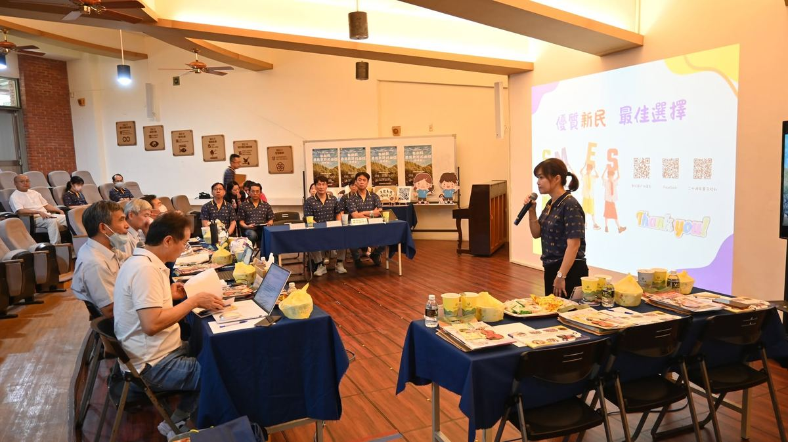
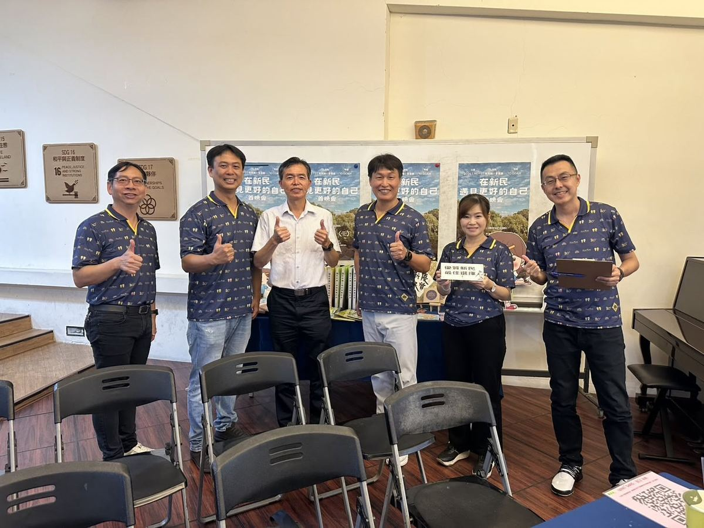

Wonderful news for the whole Hsinmin family! In the Changhua County School Evaluation for the second semester of the 2025–26 school year, Hsinmin Elementary School has been awarded an Excellent rating — the highest recognition available. This honor belongs not to any one person, but to every member of our school community who has poured their heart into education, day after day, year after year.
The evaluation reviewed every dimension of school life, and the visiting committee gave high praise to Hsinmin’s overall performance and school-running outcomes. From governance and curriculum development, to teacher professionalism and student learning; from bilingual education and technology innovation, to music and the arts, character education, reading promotion, and an international outlook — each step forward, built steadily over many years, reflects our shared commitment to creating a campus where children learn joyfully, grow healthily, and dare to dream.

The visiting committee saw a school with soul. They witnessed the confident, self-assured presence of Hsinmin’s children; the professional energy and genuine passion of our teaching team; and the rich educational outcomes and unique character that the school has cultivated over time. In the committee’s words, Hsinmin is a school defined by:
🎻 A school grounded in music — where the arts enrich every child’s inner world.
🌳 A campus alive with forest ecology — where nature is woven into daily learning.
📚 An environment shaped by reading and aesthetics — where curiosity and beauty go hand in hand.
🌏 A vision that reaches beyond borders — bilingual education and an international perspective.
💻 A generation ready for the AI era — equipped with technology skills for the future.
❤️ An education with warmth and character at its core — where kindness and integrity are practiced every day.
This Excellent rating would not have been possible without the dedication of so many. We extend our heartfelt gratitude to the visiting committee for their professional and encouraging guidance; to the Changhua County Department of Education for their careful planning and support; to Principal Huang Huai-Hsuan for her steady leadership and the sense of shared purpose she has built across the school; and to every member of our administrative team, teaching staff, parents’ association, volunteer partners, and student representatives who gave so much during the evaluation period.
One person’s effort is addition. A community’s effort is multiplication. This Excellent award belongs to every single person who has ever given something to Hsinmin.
An Excellent rating is not a destination — it is the starting point for the next chapter of growth. Hsinmin will continue to hold fast to its educational heart: refining teaching quality, deepening the school’s unique character, and walking alongside every child as they discover their potential, realize their dreams, and step into a wider world.
At Hsinmin, meet a better version of yourself. Hsinmin — the best choice for your child.
全體新民人，恭喜！在彰化縣 114 學年度第 2 學期國民中小學校務評鑑中，新民國小榮獲「優等」獎項！這份榮耀，不只是一次評鑑的成績，更是對新民多年來深耕教育、堅持理想、用心陪伴孩子成長的最佳肯定。
本次校務評鑑中，新民國小在學校整體辦學成效上，獲得訪視委員高度肯定。從校務治理到課程發展，從教師專業到學生學習，從雙語教育到科技創新，從音樂藝術到品德扎根，從閱讀推動到國際視野，一步一腳印，打造一所讓孩子快樂學習、健康成長、勇敢追夢的幸福校園。
評鑑期間，委員們看見了新民孩子自信大方的表現，也看見教師團隊專業且充滿熱情的教學能量，更看見學校長期累積的教育成果與特色發展。委員眼中的新民——
🎻 有音樂底蘊的學校
🌳 有森林生態的校園
📚 有閱讀美感的環境
🌏 有雙語國際的視野
💻 有 AI 科技的能力
❤️ 有溫度與品德的教育
感謝訪視委員專業且溫暖的指導與鼓勵。感謝彰化縣政府教育處用心規劃與協助。感謝黃懷萱校長帶領團隊穩健前行，凝聚共識與力量。感謝全體行政團隊、教師夥伴、家長會、志工夥伴及學生代表，在評鑑準備期間的全力投入與付出。更感謝每一位支持新民、相信教育的人。
一個人的努力是加法，一群人的努力是乘法。這座「優等」獎盃，屬於每一位為新民付出的人！
優等，不是終點，而是持續精進的起點。未來，新民國小將持續堅守教育初心，精進教學品質，發展學校特色，陪伴每一位孩子發掘潛能、成就夢想，走向更寬廣的世界。
🌱 在新民，遇見更好的自己。🏆 優質新民，最佳選擇。